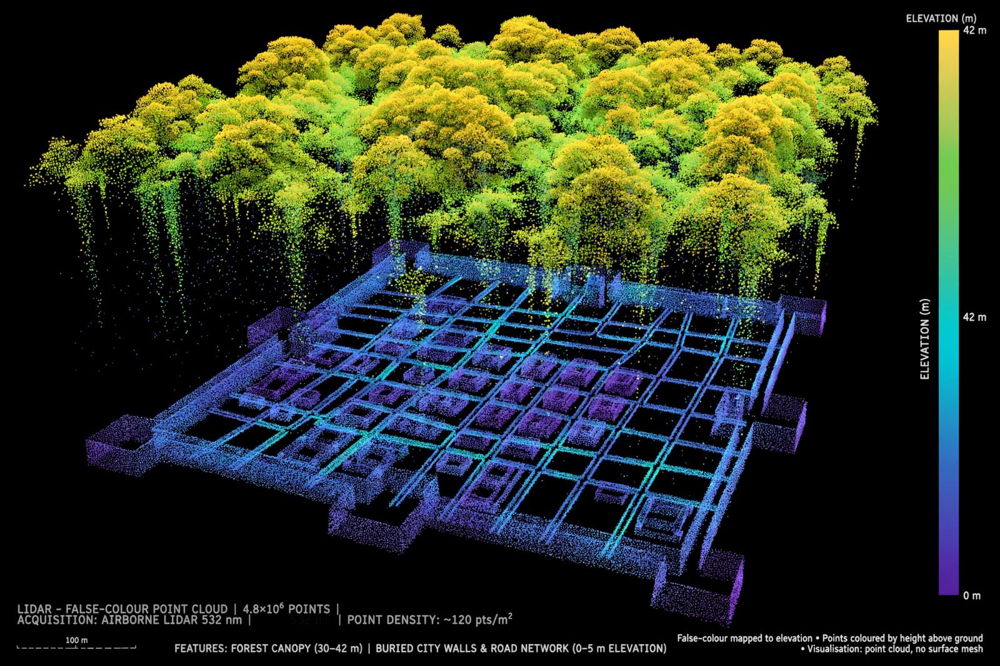

| Lidar | |
|---|---|
| Full name | Light detection and ranging |
| Principle | Laser pulse time-of-flight measurement |
| Typical wavelengths | 905 nm, 1550 nm (terrestrial); 532 nm (bathymetric) |
| Platforms | Aircraft, drones, vehicles, tripods, satellites |
| Output | Georeferenced point clouds, digital elevation models |

Lidar (also written LIDAR or LiDAR, from "light detection and ranging") is a remote sensing method that measures distances by illuminating a target with pulsed laser light and timing the reflected pulses. By combining millions of such measurements with GPS and inertial data, lidar builds precise three-dimensional models — "point clouds" — of terrain, vegetation, buildings and other objects.
A lidar instrument emits rapid laser pulses, often hundreds of thousands per second, and records the time each pulse takes to return. Distance equals the speed of light multiplied by half the travel time. Scanning mirrors or rotating sensor heads sweep the beam across the scene, and multiple returns from a single pulse can record, for example, both a forest canopy and the ground beneath — the key to lidar's ability to generate "bare earth" terrain models through vegetation gaps.
Airborne topographic lidar, flown on aircraft or drones at near-infrared wavelengths, is used for mapping and surveying. Bathymetric lidar uses green (532 nm) light, which penetrates water, to map coasts and riverbeds. Terrestrial scanners on tripods or vehicles capture buildings and streetscapes at millimetre accuracy. Spaceborne instruments such as NASA's GEDI and ICESat-2 profile forests and ice sheets from orbit. Doppler lidar measures wind by detecting frequency shifts in backscattered light.
Lidar is central to autonomous-vehicle perception, robotics, surveying, forestry, flood modelling, geology and atmospheric science. In archaeology it has been transformative: airborne surveys at Angkor revealed the vast urban grid of the Khmer capital hidden under forest, while surveys in Guatemala's Petén and at sites in Amazonia have uncovered Maya causeways and settlements and reshaped estimates of ancient populations. Consumer devices such as smartphones and tablets have incorporated miniaturised lidar for augmented reality and photography.
Laser ranging developed soon after the laser's invention in 1960; early systems measured clouds and the Moon (lunar laser ranging). Airborne laser profiling began in the 1970s–80s, and commercial scanning lidar spread in the 1990s–2000s as GPS and inertial navigation made accurate georeferencing routine.